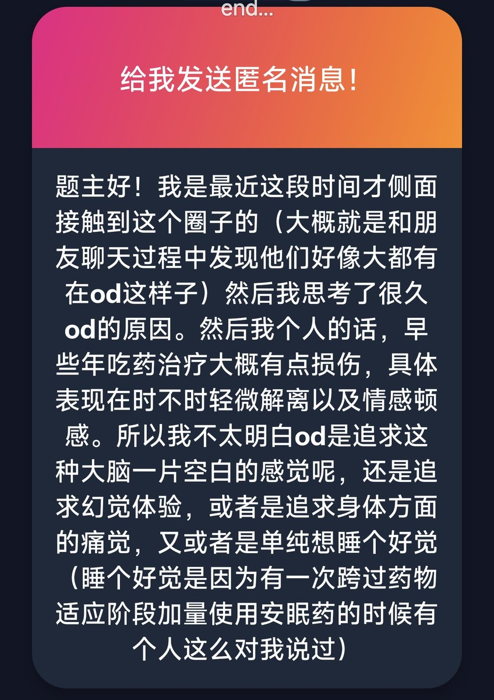

每个人选择od有各自的理由 我不提倡刻意追求od 并不一定是要过量用药 我倡导按需用药 提倡减害 每个物质都有它存在的价值 大家一定不要盲目跟风主动去od什么的 没必要 把药物视作资源 学会合理利用好每一份资源 你觉得你想让大脑空白 现在需要 那就过量用解离剂 你觉得你想要幻觉要trip 放松一下 那就去用一点致幻剂 你觉得你只是想睡个好觉 那就只吃1t 2t阿普唑仑
其实问题很简单 物质本来没有罪 是人们用错了它 药物可以成为你生活的一部分 不必刻意追求过量 只要解决你当下的需求就好 这才是物质存在的意义
自律用药 然后自由用药 想要trip 就过量一次 无妨
大多时候 以医用的态度看待药物就好
其实问题很简单 物质本来没有罪 是人们用错了它 药物可以成为你生活的一部分 不必刻意追求过量 只要解决你当下的需求就好 这才是物质存在的意义
自律用药 然后自由用药 想要trip 就过量一次 无妨
大多时候 以医用的态度看待药物就好
